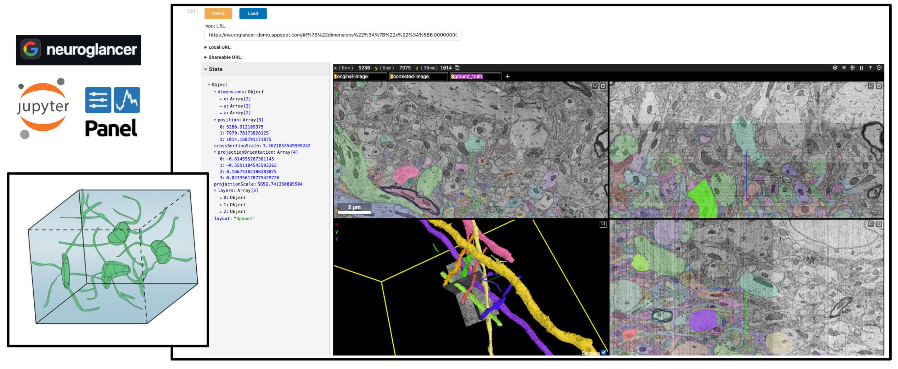

Volumetric Imaging#


Overview#
Volumetric imaging refers to techniques that capture data in three dimensions, allowing researchers to visualize and analyze the internal structures of objects, including depth and spatial relationships. Unlike traditional 2D imaging, volumetric imaging provides a more comprehensive view of specimens.
One of the most powerful volumetric imaging techniques is electron microscopy (EM). EM uses a beam of electrons to create high-resolution images at the nanometer scale, enabling the exploration of fine structural details of biological specimens such as cells, tissues, and molecular structures. However, handling and visualizing the massive datasets generated by EM poses significant challenges due to their size and complexity.
Introducing Neuroglancer#
Neuroglancer by Google is a WebGL-based viewer designed specifically for volumetric data, offering efficient handling of large-scale datasets through data streaming. Its key features include:
Interactive Visualization: Smooth, real-time navigation through volumetric data.
Customizable Layers: Support for raw images, segmented regions, and annotations.
Web-Based Interface: Accessible directly from browsers without the need for specialized software.
Originally developed for neuroscience, Neuroglancer empowers researchers to explore complex 3D structures by tracing neural pathways, identifying cellular components, and annotating regions of interest.
Integrating Neuroglancer with Jupyter Notebooks#
While Neuroglancer is a powerful tool for exploring large volumes, it is typically used as a standalone application. Researchers often utilize Jupyter Notebooks to conduct reproducible research and combine code, data analysis, and visualizations.
By integrating Neuroglancer within Jupyter Notebooks using HoloViz Panel, researchers can:
Consolidate Workflow: Keep code, data analysis, and visualization in a single environment.
Enhance Reproducibility: Share notebooks that include both computational steps and interactive visualizations.
Facilitate Collaboration: Allow collaborators to interact with the same data and visualizations within the notebook.
Using HoloViz for the Integration#
In this workflow, we will demonstrate how to embed Neuroglancer within a Panel application, highlighting how HoloViz tools can seamlessly extend third-party applications. By using Panel, we can:
Embed the Neuroglancer viewer directly within a notebook cell.
Create interactive widgets and controls to manipulate and report the state of the viewer.
Combine Neuroglancer views alongside other visualizations.
Prerequisites#
Topic |
Type |
Notes |
|---|---|---|
Prerequisite |
Familiarity with Panel for building interactive apps |
Imports and Configuration#
import param
import panel as pn
import neuroglancer
pn.extension()
Defining the NeuroglancerNB Class#
To embed Neuroglancer within a Panel application, we’ll define a custom class NeuroglancerNB. This class creates a Panel viewable object that includes the Neuroglancer viewer embedded within an iframe, along with controls to load a Neuroglancer state from a URL, display the current state JSON, and generate shareable links.
class NeuroglancerNB(pn.viewable.Viewer):
"""
A HoloViz Panel app for visualizing and interacting with Neuroglancer viewers
within a Jupyter Notebook.
"""
source = param.Parameter(default=None, doc="""
Source for the initial state of the viewer, which can be a URL string
or an existing neuroglancer.viewer.Viewer instance.
""")
height = param.Number(default=600, doc="height of the viewer.")
width = param.Number(default=800, doc="width of the viewer.")
show_state = param.Boolean(default=False, doc="Show the viewer state for debugging.")
load_demo = param.Boolean(default=False, doc="Load the demo dataset on initialization.")
DEMO_URL = "https://neuroglancer-demo.appspot.com/#!%7B%22dimensions%22%3A%7B%22x%22%3A%5B6.000000000000001e-9%2C%22m%22%5D%2C%22y%22%3A%5B6.000000000000001e-9%2C%22m%22%5D%2C%22z%22%3A%5B3.0000000000000004e-8%2C%22m%22%5D%7D%2C%22position%22%3A%5B5029.42333984375%2C6217.5849609375%2C1182.5%5D%2C%22crossSectionScale%22%3A3.7621853549999242%2C%22projectionOrientation%22%3A%5B-0.05179581791162491%2C-0.8017329573631287%2C0.0831851214170456%2C-0.5895944833755493%5D%2C%22projectionScale%22%3A4699.372698097029%2C%22layers%22%3A%5B%7B%22type%22%3A%22image%22%2C%22source%22%3A%22precomputed%3A%2F%2Fgs%3A%2F%2Fneuroglancer-public-data%2Fkasthuri2011%2Fimage%22%2C%22tab%22%3A%22source%22%2C%22name%22%3A%22original-image%22%7D%2C%7B%22type%22%3A%22image%22%2C%22source%22%3A%22precomputed%3A%2F%2Fgs%3A%2F%2Fneuroglancer-public-data%2Fkasthuri2011%2Fimage_color_corrected%22%2C%22tab%22%3A%22source%22%2C%22name%22%3A%22corrected-image%22%7D%2C%7B%22type%22%3A%22segmentation%22%2C%22source%22%3A%22precomputed%3A%2F%2Fgs%3A%2F%2Fneuroglancer-public-data%2Fkasthuri2011%2Fground_truth%22%2C%22tab%22%3A%22source%22%2C%22selectedAlpha%22%3A0.63%2C%22notSelectedAlpha%22%3A0.14%2C%22segments%22%3A%5B%223208%22%2C%224901%22%2C%2213%22%2C%224965%22%2C%224651%22%2C%222282%22%2C%223189%22%2C%223758%22%2C%2215%22%2C%224027%22%2C%223228%22%2C%22444%22%2C%223207%22%2C%223224%22%2C%223710%22%5D%2C%22name%22%3A%22ground_truth%22%7D%5D%2C%22layout%22%3A%224panel%22%7D"
def __init__(self, **params):
super().__init__(**params)
self.source_not_provided = (self.source is None)
self.viewer = (self.source if isinstance(self.source, neuroglancer.viewer.Viewer)
else neuroglancer.Viewer())
# Setup UI
self.url_input = pn.widgets.TextInput(
placeholder="Enter a Neuroglancer URL and click Load",
name="Input URL",
width=self.width,
)
self.load_button = pn.widgets.Button(name="Load", button_type="primary", width=75)
self.demo_button = pn.widgets.Button(name="Demo", button_type="warning", width=75)
self.json_pane = pn.pane.JSON({}, theme="light", depth=2, name="Viewer State",
sizing_mode='stretch_both')
self.shareable_url_pane = pn.pane.Markdown("**Shareable URL:**")
self.local_url_pane = pn.pane.Markdown("**Local URL:**")
self.iframe = pn.pane.HTML(
height=self.height,
width=self.width,
styles={"resize": "both", "overflow": "hidden"},
)
# Configure viewer and UI
local_url = self.viewer.get_viewer_url()
self.local_url_pane.object = self._generate_dropdown_markup("Local URL", local_url)
iframe_style = ('frameborder="0" scrolling="no" marginheight="0" marginwidth="0" '
'style="width:100%; height:100%; min-width:500px; min-height:500px;"')
self.iframe.object = f'<iframe src="{local_url}" {iframe_style}></iframe>'
# UI Actions
self.load_button.on_click(self._on_load_button_clicked)
self.demo_button.on_click(self._on_demo_button_clicked)
self.viewer.shared_state.add_changed_callback(self._on_viewer_state_changed)
# If a source URL was provided, initialize the viewer from it
if self.source and not isinstance(self.source, neuroglancer.viewer.Viewer):
self._initialize_viewer_from_url(self.source)
# Load the demo if requested
if self.load_demo:
self.demo_button.clicks += 1
def _initialize_viewer_from_url(self, source: str):
self.url_input.value = source
self._load_state_from_url(source)
def _on_demo_button_clicked(self, event):
self.url_input.value = self.DEMO_URL
self._load_state_from_url(self.url_input.value)
def _on_load_button_clicked(self, event):
self._load_state_from_url(self.url_input.value)
def _load_state_from_url(self, url):
try:
new_state = neuroglancer.parse_url(url)
self.viewer.set_state(new_state)
except Exception as e:
print(f"Error loading Neuroglancer state: {e}")
def _on_viewer_state_changed(self):
# Update shareable URL and JSON pane
shareable_url = neuroglancer.to_url(self.viewer.state)
self.shareable_url_pane.object = self._generate_dropdown_markup("Shareable URL", shareable_url)
self.json_pane.object = self.viewer.state.to_json()
def _generate_dropdown_markup(self, title, url):
return f"""
<details>
<summary><b>{title}:</b></summary>
<a href="{url}" target="_blank">{url}</a>
</details>
"""
def __panel__(self):
controls_layout = pn.Column(
pn.Row(self.demo_button, self.load_button),
pn.Row(self.url_input),
visible=self.source_not_provided,
)
links_layout = pn.Column(self.local_url_pane, self.shareable_url_pane)
state_widget = pn.Card(
self.json_pane,
title="State",
collapsed=False,
visible=self.show_state,
styles={"background": "WhiteSmoke"},
max_width=350
)
return pn.Column(
controls_layout,
links_layout,
pn.Row(state_widget, self.iframe)
)
Approach 1: Launching a New Viewer and Loading State from URL#
In this workflow, we’ll initialize a new Neuroglancer viewer and load a dataset using a parameterized URL. This allows us to explore different datasets by simply changing the URL.
Either use NeuroglancerNB(source=<URL>) or just run NeuroglancerNB() and input the URL in the GUI:
To use a demo URL, either load_demo=True or click the Demo button. You can find other demo links on the Neuroglancer repository.
NeuroglancerNB(show_state=True, load_demo=True)
{kind=link}
Here’s a static snapshot of what the previous cell produces. 👉
Approach 2: Displaying a Pre-specified Viewer#
Alternatively, you can provide a pre-configured neuroglancer.viewer.Viewer object as the source to display that viewer in the notebook. This allows you to set up the viewer programmatically and then embed it.
We create a Neuroglancer
Viewerinstance.Within a transaction (
viewer.txn()), we add layers to the viewer:An image layer from a precomputed data source.
A segmentation layer.
We then pass this configured viewer to our
NeuroglancerNBclass.The viewer is embedded within the Panel app and displayed in the notebook.
viewer = neuroglancer.Viewer()
with viewer.txn() as s:
# Add an image layer from a precomputed data source
s.layers["image"] = neuroglancer.ImageLayer(
source="precomputed://gs://neuroglancer-janelia-flyem-hemibrain/emdata/clahe_yz/jpeg",
)
# Add a segmentation layer
s.layers["segmentation"] = neuroglancer.SegmentationLayer(
source="precomputed://gs://neuroglancer-janelia-flyem-hemibrain/v1.1/segmentation",
)
NeuroglancerNB(source=viewer, show_state=True)
Here’s a static snapshot of what the previous cell produces. 👉
Next Steps#
Explore Your Own Datasets: Modify the code to load and visualize your own volumetric datasets.
Extend the Application: Integrate additional HoloViews plots or other Panel components to create a more comprehensive application. For instance, you might add controls for adjusting visualization parameters.
Share and Collaborate: Use the shareable URLs generated by the app to share specific views or states with collaborators. Embedding the application in a notebook ensures that your analysis and visualizations are reproducible and shareable.
Resources#
Resource |
Description |
|---|---|
Neuroglancer source code and documentation |
|
Python interface for controlling Neuroglancer |